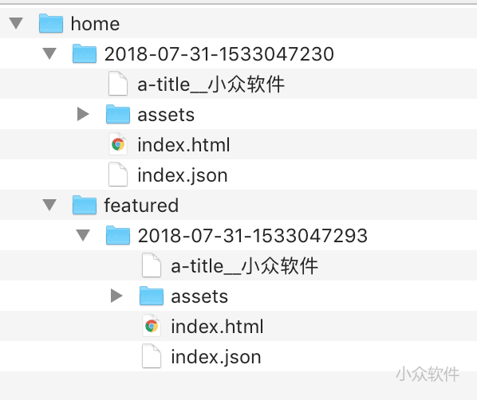
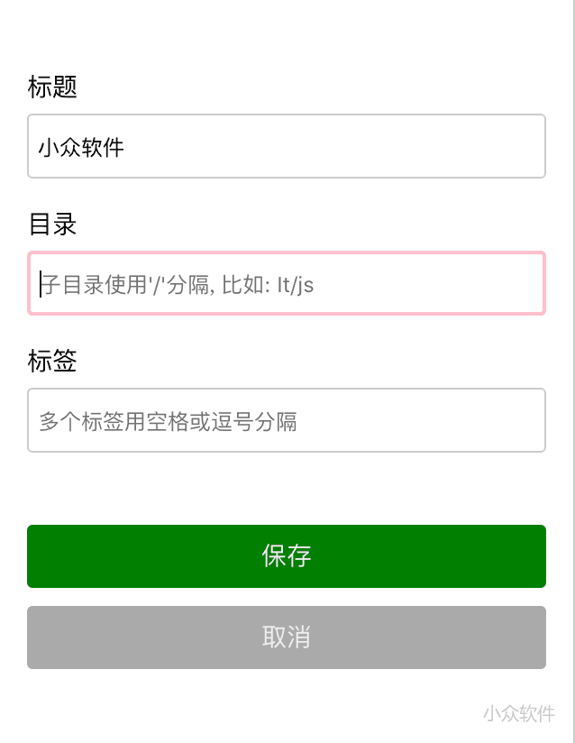

MaoXian Web Clipper 是一个十分不同的网页剪辑工具，它能够完全将你要的内容保存在本地，并且以 HTML / Markdown 的格式保存起来，只要文件不丢，内容就不会丢失。@Appinn

来自发现频道，感谢 @laoquans 的推荐。
MaoXian Web Clipper 最大的特点是它会直接下载你选中的网页剪辑，然后保存为 HTML 文件，非常的赞。
保存下载的所有文件都位于 下载/mx-wc 路径下面，格式是这个样子的：

而里面的 home、featured 都是可以自定义的，当你选中范围以后，点击 回车 键，就会出现一个详情页面，你需要填写标题、目录、标签。
而这个 home、featured 就是目录了，并且支持使用 / 来创建子目录，支持中文。

保存格式支持 HTML 与 Markdown 两种，而剪辑效果是这样的：

整个网页位于本地，包括图片，不怕网络原因导致的丢失，只要硬盘不坏就好了 😂
另外，MaoXian Web Clipper 还有一个简单的检索页面：

支持通过标题、标签与目录进行搜索，唯一的遗憾可能是不能自行添加备注了。
MaoXian Web Clipper 的功能和特点：
- 本地存储 – 所有文件都保存在本地硬盘上，用户可以完全掌控自己的数据，比如可以自由选择第三方同步服务。
- 自由选择 – 可自由选择要裁剪的区域。(不会自作聪明地帮你瞎选中某个区域)
- 调整选中 – 当用户选中一个区域后，可通过快捷键灵活地调整选中区域
- 分类归档 – 裁剪前可修改标题，录入保存目录，打上几个标签
- 裁剪历史 – 记录裁剪历史，并支持搜索(通过标题/目录/标签)
- 重置历史 – 当用户在新电脑上安装插件后，可以通过重置历史功能，载入裁剪历史，目录历史，标签历史
你只需要带着电脑上的 mx-wc 文件夹（位于浏览器默认下载路径下），就能带着所有网页剪辑去任何地方了。
使用时需要注意，MaoXian Web Clipper 会一次下载很多文件，别被吓到了，另外开发者建议关闭“每次下载都询问文件名”。如果你想要改变默认下载路径，可以看这里。
嗯，青小蛙要给个精选。
项目主页在这里，Chrome 商店（.crx 下载） | Firefox 商店
最后，开发者其实使用了「剪藏」这个词，青小蛙则习惯于使用「剪辑」，那么应该用哪个呢？
×用微信扫描并分享